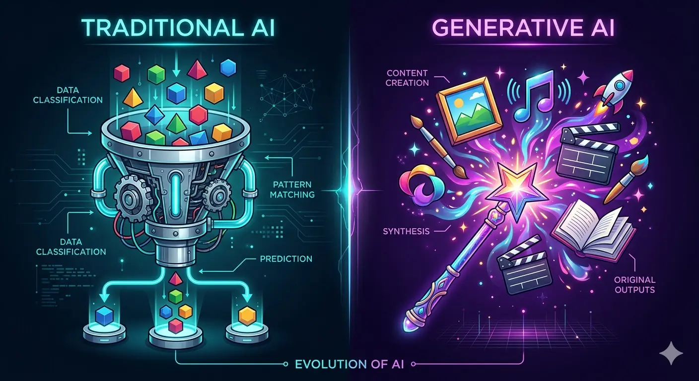

Understanding the conceptual shift from traditional rule-based programming to AI models that generate entirely new digital assets.
What exactly marks the difference?
Main Definition:
"Generative AI refers to artificial intelligence systems that can create new content—such as text, images, audio, and video—based on patterns learned from training data and user instructions (prompts)."

Original digital art.
Paragraphs, code, essays.
Voice, music, effects.
Animation, scene generation.
Large dataset used to teach the AI.
Learned relationships in data + User instruction describing desired output.
AI creates new content matching the pattern.
The Five-Step prompt-to-production pipeline
AI learns from massive amounts of data.
"The AI system reads and learns patterns from billions of examples"
AI identifies patterns and relationships.
"It discovers 'rules' like 'images of cats usually contain whiskers, eyes, fur'"
User provides instruction describing desired output.
"You tell the AI what you want: 'Generate a futuristic city'"
AI generates content one piece at a time.
"The AI uses learned patterns to create new content that matches your description"
AI produces result, user can refine.
"You get the result and can ask for variations or improvements"
"Just like humans learn art by studying many paintings, AI learns to generate images by analyzing thousands of images, acting like a musician improvising based on learned patterns."